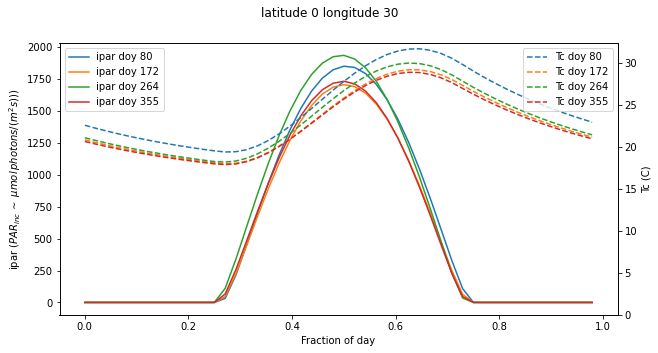
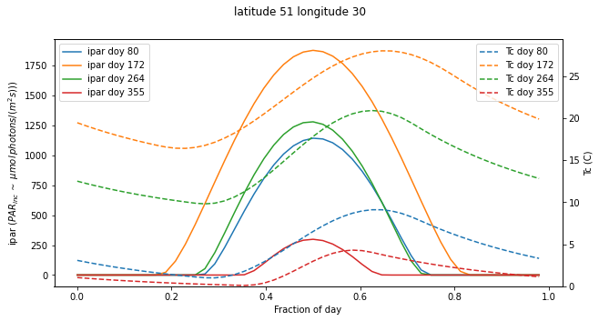

Solar radiation and land surface temperature : Answers to exercises
Exercise
- At what time of year is PAR radiation incident on Earth the highest?
- Why is this so?
#### ANSWERS
msg = '''
At what time of year is PAR radiation incident on Earth the highest?
Why is this so?
The periapsis (closest distance between the Sun and the Earth)
occurs in Northern Latitude winter,
so PAR incident on the Earth is *highest* in Northern Latitude winter.
'''
print(msg)
At what time of year is PAR radiation incident on Earth the highest?
Why is this so?
The periapsis (closest distance between the Sun and the Earth)
occurs in Northern Latitude winter,
so PAR incident on the Earth is *highest* in Northern Latitude winter.
Exercise
- Describe and explain the patterns of iPAR as a function of day of year and latitude.
- Comment on the likely reality of these patterns.
# ANSWER
msg = '''
Explain the patterns of modelled iPAR as a function of day of year
and latitude.
We have plotted iPAR as a function of DOY for various latitudes.
90 and -90 are the poles and only receive radiation during half of
the year, bounded by the spring and autumn equinox (dashed lines).
The peak occurs at the solstice (24 hours of daylight).
66.5 and -65.5 are the polar circles. At and above these latitides
there is no iPAR (0 hours of daylight) in the winter (summer)
equinox for the Arctic (Antarctic) but 24 hours of daylight at
solstice (they peak at one solstice and have a minimum at the other).
23.5 (-23.5) are the topics. These are significant because they
have the sun directly overhead (sza = 0) at noon on the solstice.
0 degrees is the equator. The sun is directly overhead
at noon on the equinox. We also see that there is the smallest variation
in iPAR, according to this model.
The peak magnitide of noon iPAR varies considerably with latitude,
but there is surprisingly little variation in the peak *mean* iPAR with
latitude. This is because of variations in daylength.
The explanation for all of this lies in the seasonal behaviour
of the solar zenith angle (you should expand on this in your answer!).
'''
print(msg)
Explain the patterns of modelled iPAR as a function of day of year
and latitude.
We have plotted iPAR as a function of DOY for various latitudes.
90 and -90 are the poles and only receive radiation during half of
the year, bounded by the spring and autumn equinox (dashed lines).
The peak occurs at the solstice (24 hours of daylight).
66.5 and -65.5 are the polar circles. At and above these latitides
there is no iPAR (0 hours of daylight) in the winter (summer)
equinox for the Arctic (Antarctic) but 24 hours of daylight at
solstice (they peak at one solstice and have a minimum at the other).
23.5 (-23.5) are the topics. These are significant because they
have the sun directly overhead (sza = 0) at noon on the solstice.
0 degrees is the equator. The sun is directly overhead
at noon on the equinox. We also see that there is the smallest variation
in iPAR, according to this model.
The peak magnitide of noon iPAR varies considerably with latitude,
but there is surprisingly little variation in the peak *mean* iPAR with
latitude. This is because of variations in daylength.
The explanation for all of this lies in the seasonal behaviour
of the solar zenith angle (you should expand on this in your answer!).
msg = '''
Comment on the likely reality of these patterns.
These plots take no account of several important factors:
* altitude (less atmospheric path for attenuation) so
the radiation will be higher at altitude. Also, the
spectral nature of the SW radiation will vary with
altitude, so the proportion of PAR may also vary.
* cloud cover: In the tropics in particular, extensive
cloud cover will lower the irradiance at the surface.
* slope: the Earth here is assumed flat, relative to the
geoid, but the local terrain slope and aspect will strongly
affect local conditions (consider the projection term).
* Earth curvature: the airmass here in the attenuation term
is considered 1/cos(sza). That is a good approximation
up to around 70 degrees. Beyond that, Earth curvature
effects and refraction should normally be accounted for.
However, since the iPAR is low under those conditions,
it is often ignored. It may be significant towards the Poles.
'''
print(msg)
Comment on the likely reality of these patterns.
These plots take no account of several important factors:
* altitude (less atmospheric path for attenuation) so
the radiation will be higher at altitude. Also, the
spectral nature of the SW radiation will vary with
altitude, so the proportion of PAR may also vary.
* cloud cover: In the tropics in particular, extensive
cloud cover will lower the irradiance at the surface.
* slope: the Earth here is assumed flat, relative to the
geoid, but the local terrain slope and aspect will strongly
affect local conditions (consider the projection term).
* Earth curvature: the airmass here in the attenuation term
is considered 1/cos(sza). That is a good approximation
up to around 70 degrees. Beyond that, Earth curvature
effects and refraction should normally be accounted for.
However, since the iPAR is low under those conditions,
it is often ignored. It may be significant towards the Poles.
Exercise
- Use the
radiation()function to explore ipar and temperature for different locations and times of year - How are these patterns likely to affect what plants grow where?
#### ANSWER
import numpy as np
import matplotlib.pyplot as plt
from geog0133.solar import solar_model,radiation
import scipy.ndimage.filters
from geog0133.cru import getCRU,splurge
from datetime import datetime, timedelta
msg = '''
Use the radiation() function to explore ipar and temperature for different locations and times of year
'''
print(msg)
tau=0.2
parprop=0.5
year=2020
longitude=30
# example -- you should do more locations
for lat in [0,51]:
fig,ax=plt.subplots(1,1,figsize=(10,5))
ax2 = ax.twinx()
# loop over solstice and equinox doys
for doy in [80,172,264,355]:
jd,ipar,Tc = radiation(lat,longitude,doy)
ax.plot(jd-jd[0],ipar,label=f'ipar doy {doy}')
ax2.plot(jd-jd[0],Tc,'--',label=f'Tc doy {doy}')
# plotting refinements
ax.legend(loc='upper left')
ax2.legend(loc='upper right')
ax.set_ylabel('ipar ($PAR_{inc}\,\sim$ $\mu mol\, photons/ (m^2 s))$)')
ax2.set_ylabel('Tc (C)')
ax.set_xlabel("Fraction of day")
ax2.set_ylim(0,None)
_=fig.suptitle(f"latitude {lat} longitude {longitude}")
Use the radiation() function to explore ipar and temperature for different locations and times of year


msg = '''
How are these patterns likely to affect what plants grow where?
We see the same main effects as in the exercises above wrt latitudinal variations
and variations over the year.
Outside of the tropics, we note the large variations in IPAR
and temperature over the seasons. Plants respond to seasonal cues (phenology)
to optimise their operation. In the topics, water is generally a more
significant driver than temperature or IAPR.
'''
print(msg)
How are these patterns likely to affect what plants grow where?
We see the same main effects as in the exercises above wrt latitudinal variations
and variations over the year.
Outside of the tropics, we note the large variations in IPAR
and temperature over the seasons. Plants respond to seasonal cues (phenology)
to optimise their operation. In the topics, water is generally a more
significant driver than temperature or IAPR.
Last update: January 7, 2021